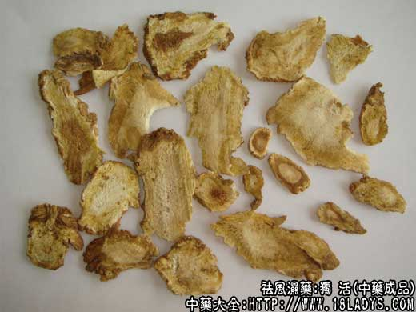

原文连接:https://www.daquan.com/post/2322.html



独活为常用中药。《神农本草经》列为上品。
别名：大活、肉独活。
来源：为伞形科当归属多年生重齿植物毛当归的干燥根。多为人工栽培。
产地：主产于湖北恩施。宜昌及四川巫溪，奉节等地。
性状鉴别：本品主根呈圆锥形或圆柱形。下部有分歧。全长给10～20厘米。主根长约4～10厘米、顶端直径约2～4厘米，尾端0.2～0.3厘米。有的带有细支根弯曲扭连于一起。顶端茎痕明显，直径与根顶相同，略呈圆平形，少数下限呈凹状。表皮黄褐色或褐色，主根上端多环形皱纹。中下端及支根上多纵皱纹，并有横生突起的皮孔。质坚硬，不易折断，断面黄白色或土黄色，木质部形成层，颜色稍深。壬皮部可见黄棕色小油点（分泌腔）环形排列数周，气辛香而较浊，味苦辛麻舌。
主要成分：含少量挥发油、佛手柑内酯及当归醇。
药理作用：祛风湿，通经络。药理试验证实有镇痛、镇静、收缩血管的作用。
炮制：多切片，生用。
性味：辛、苦、微温。
归经：归肾经。
功能：祛风、去湿、止痛。
主治：伏风头痛、腰膝痹痛。
临床应用：1、用于风湿，尤其项背肌肉风湿和下半身关节风湿，腰背或髋膝酸痛，两足麻木。常配防风、秦艽等加强祛风，配杜仲、桑寄生调补身体，方如独活寄生汤。
2、用于头痛，治感冒风寒而夹湿所致的头痛较适宜，临床表现为：痛时有如布巾紧扎头部，昏沉而胀重、舌苔白腻、脉濡缓，可配羌活、藁本、蔓荆子同用，方如羌活胜湿汤。
使用注意：独活性较温，盛夏时要慎用。高热而不恶寒，或阴虚有热者，亦忌用。
用量：3～9g。
处方举例：独活寄生汤《千金方》：独活6g、桑寄生12g、防风6g、秦艽9g、杜仲9g、细辛3g、当归9g、党参12g、熟地15g、茯苓9g、白芍12g、牛膝9g、川芎6g、肉桂末1.5g(冲)、甘草3g、水煎服。（附：奔放可简化，只取独活、桑寄生、秦艽、牛膝、杜仲、当归、甘草七味便可）。
注：除上述独活外，还有香独活（山独活），牛尾独活，九眼独活，分别简述如下：
(1)香独活：来源于伞形科植物毛当归（浙独活），短毛独活（短毛白芷），云南牛防风（白芷），雾灵独活，永宁独活......等多种同科不同属种的植物干燥根，这些植物分别分布于我国各大行政区，均为野后，性状大多类似。主根类圆柱形多分歧，长约5～15厘米，直径1.5～3厘米，根头部膨大，顶端有茎叶残痕，外表面灰黄色或棕褐色，有不规则的纵沟纹及皮孔。质较轻而脆或显柴质。易折断，断面形成层棕色，韧皮部和皮部灰白色，常有裂隙。棕黄色油点散在，木质部暗棕色，气特异略似当归的香气，味微甘淡而辛辣。
以主根粗壮，质软，气香者为佳。
(2)牛尾独活：为伞形科植物牛尾独活的干燥根。主产于四川、均为野生，主根长圆锥形，稍弯曲，长约15～30厘米，直径约0.6～3厘米，末端细小仅数毫米，顶端残存长短不等的数个茎芦，直径约1～2厘米，表面灰黄色，有不规则的纵皱纹及横长皮孔。质坚脆，易折断，断面黄白色，中有黄色小木质心。气微香，味微甜苦。
以主根粗长少分歧气香者为佳。
3、九眼独活：为五加科楤木属植物九眼楤（土当归）的干燥根茎及根。主产于四川、甘肃、云南等省。均为野生。根茎粗壮，扭曲不直，长约30～80厘米，直径3～8厘米，上面有圆形凹穴（茎痕）如眼眶，6～9枚或更多故称“九眼独活”。每一凹穴构成一节作串状排列组成根茎。根茎外围散生多数圆柱形或细须状根，干燥后多残断或掉落，表面粗糙，有纵皱纹，质略坚而轻脆，断面灰黄色纤维性，有很多裂隙和分泌腔，气微香，味淡微苦。（《本草纲目》所载为本品）。
以根茎粗壮多眼，有油性有香气者为佳。
(4)新中国成立前后以上四种独活在华北及京津市场上均有销售，近几年来以湖北栽培独活连年增产，满足了各地市场需要，又因一般习惯认为湖北独活品质较好，故京津两地，只保留了湖北独活一种，其它三种独活暂不作购销。
(5)湖北独活外形与当归近似，不易分辨，唯当归香而不浊，甘而微苦，切成饮片后独活韧皮部木质部多成淡褐色或黑褐色，当归片则为黄白色，可以区别。
(6)以上数种独活，性味不尽相同，疗效何优何劣，尚待作深入研究。